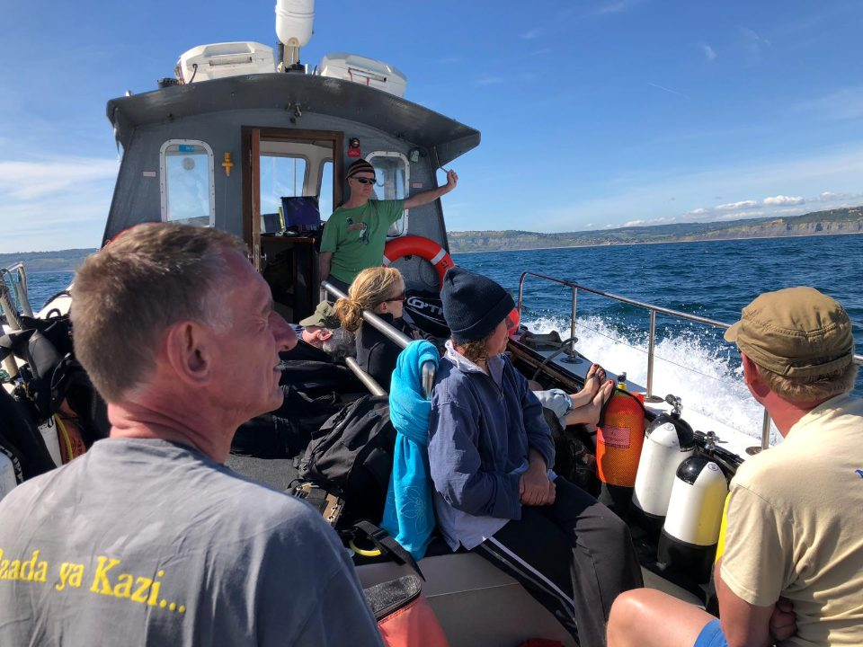

Lyme Regis, June 2019
After a week or two of almost constant rain, the forecast for our Lyme Regis weekend looked promising. We arrived Thursday evening and managed to get our act together enough to come joint first place in the pub quiz at the Pilot Boat.
We had a relatively late start the next morning, heading out to dive the M2 submarine, a bumpy ride to the west of Portland Bill. On the wreck, the visibility was good which made navigation straightforward. Alex and I were able to complete a full tour, covering the hangar, torpedo tubes, the stern and conning tower. Along the way, we met some large congers, pollack and tompot blennies. A smoother ride took us back towards Lyme Regis and our second dive, a drift off Charmouth, where we saw some large spider crabs and dogfish. This was a picturesque dive, with slabs of rock that were undercut, in some cases by several metres.

Our second day started at the more usual time of 8:30 and with calm conditions, we travelled out to the wreck of the Baygitano. The shot line took us down near to the boilers, which were home to congers and tompot blennies. There were more large congers lurking under the wreck's metal plates, along with some large edible crabs. The only downside to this wreck was that it was covered in snagged fishing line, some of which we recovered for proper disposal. The second dive of the day was the submarine [HMS Sidon](https://en.wikipedia.org/wiki/HMS_Sidon_(P259)), which is intact and sitting at around 35m. We dropped to the seabed, where we spotted a crawfish near the hull. From there, we continued up the port side, to the torpedo tubes and bow. We then made our way along the deck towards the conning tower, from which we ascended, accompanied by two large jellyfish.
The third and final day started early again, beginning on the dredger, St Dunstan. The visibility wasn't as good as the previous dives, but this was made up for by the appearance of a large angler fish next to the boilers. The wreck was surrounded by impressive schools of bib and as with other wrecks in this area, there were plenty of large conger lurking in tubes and crevices. Towards the bow, we could make out large cogs and drums, part of the original dredging mechanism. Our second and final dive of the trip was a drift dive at the foot of Golden Cap. This was characterised by large boulders on a sandy plain. There were lots of juvenile bib, spider crabs, a candy stripe flatworm and dogfish.
In all, this was a great few days diving and Rob, our skipper on Blue Turtle, helped us make the most of it. He even provided lunch!
Who went? Chris (organiser), Alex, Boggie, Sarah B, Emily, Gareth (non-diver), Trevor